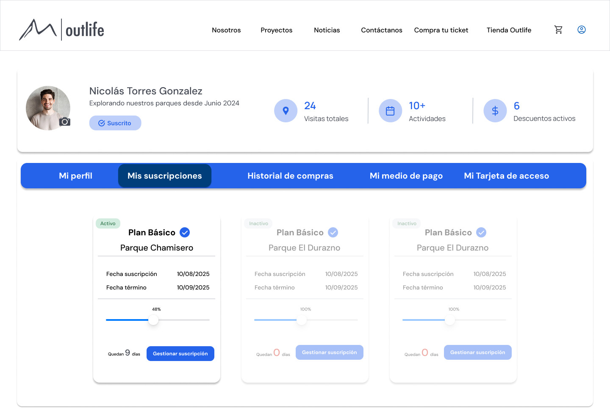
Resumen ejecutivo
Outlife necesitaba actualizar dos puntos críticos de su experiencia web: el checkout y el perfil de usuario. Ambos tenían una interfaz visualmente anticuada, baja jerarquía y poco alineamiento con la marca, lo que afectaba la claridad del proceso de compra y el valor percibido después de la compra.
Checkout
Rediseñé el flujo para hacer más evidente el paso a paso, mejorar la lectura del resumen de compra y dar mayor claridad visual a las decisiones principales del usuario.
Perfil
Transformé un perfil básico en un espacio más robusto y atractivo, con historial, tickets, señales de uso y elementos de fidelización orientados a aumentar el valor post-compra.
Sistema
Alineé ambas experiencias con los componentes, colores y patrones visuales que ya había definido para otros productos del ecosistema Outlife.
El resultado fue una propuesta aprobada e implementada, más clara en compra, más consistente con la marca y con mayor valor para la relación posterior entre usuario y producto.
El desafío
El reto no era solo modernizar la interfaz, sino transformar dos experiencias débiles en puntos de contacto más claros, atractivos y coherentes con la marca.
El checkout existente no comunicaba bien el paso a paso y se percibía más como una maqueta funcional que como una experiencia de compra preparada para cliente final. Faltaba jerarquía visual, diferenciación entre bloques y señales claras de progresión.
El perfil de usuario presentaba el mismo problema: una estructura básica, visualmente anticuada y limitada a datos personales e historial.
La oportunidad era convertirlo en un espacio más robusto, capaz de reforzar la relación post-compra y aportar continuidad dentro del ecosistema digital.
El desafío fue diseñar ambas experiencias en un plazo acotado, alinearlas al lenguaje visual de marca e iterarlas con stakeholders hasta su aprobación.
Investigación y enfoque
La propuesta se estructuró a partir de un diagnóstico del flujo actual, complementado con benchmark, exploración estructural y validación continua con stakeholders.
Evaluación del flujo
Identifiqué fricción en jerarquía, orden y progresión del checkout.
Benchmark
Analicé patrones de compra, resumen y progresión en plataformas comparables.
Wireframes
Exploré estructura en low fidelity antes de definir la capa visual.
User personas
Construidos con datos reales: edad, contexto y comportamiento.
Iteración
Trabajo continuo con líder de proyecto y validación con gerencia.
Implementación
Acompañé desarrollo asegurando consistencia del sistema.
Usuarios objetivo
A partir de datos reales levantados por la empresa sobre edad, comuna, composición familiar, profesión y preferencias de actividades, construí tres user personas representativos de los segmentos más frecuentes de Outlife. Estos perfiles ayudaron a aterrizar decisiones de diseño para necesidades distintas de rapidez, planificación, confianza, accesibilidad y uso recurrente.
Exploración temprana del checkout
Antes de llegar a la versión final, trabajé con wireframes de baja fidelidad para ordenar la estructura del carrito, el resumen de compra y la transición hacia pago. Esta etapa permitió validar jerarquía, orden de contenidos y prioridades de acción antes de invertir en detalle visual.
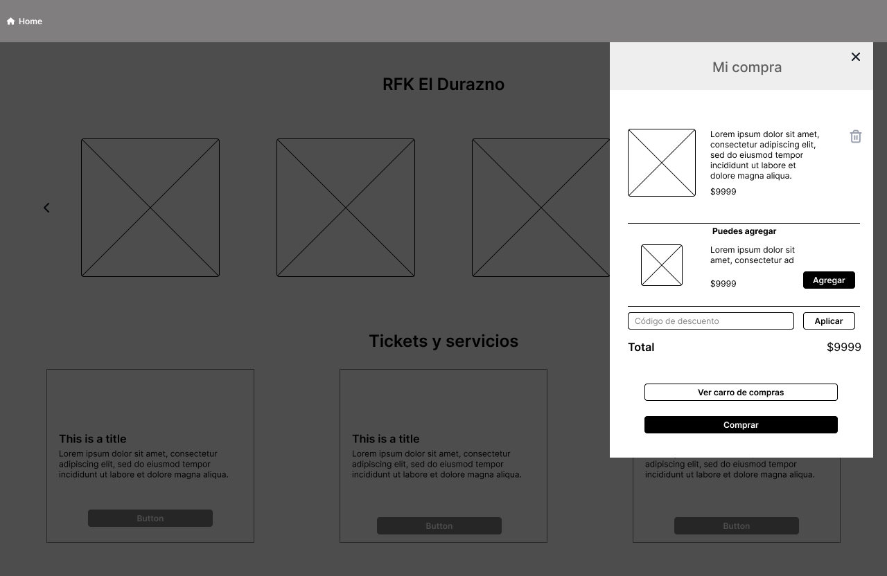
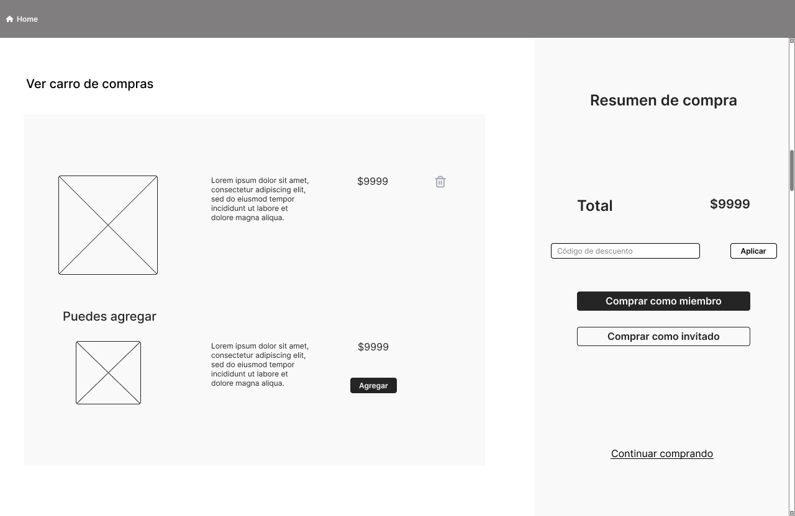
Antes y después: checkout
El rediseño transformó una experiencia de compra visualmente básica y difícil de seguir en una secuencia más clara, guiada y consistente con una web orientada al cliente final.
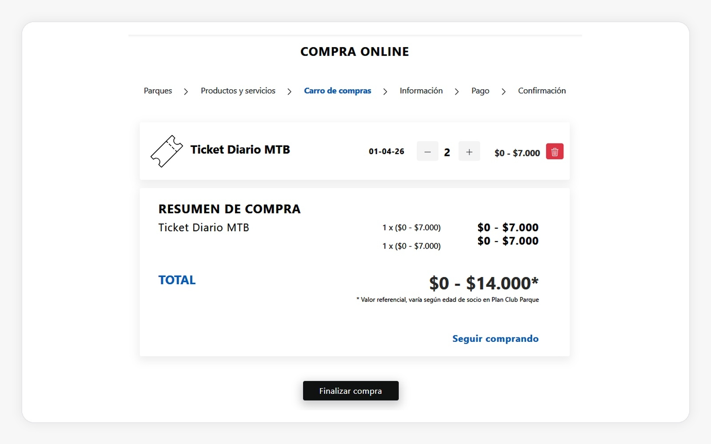
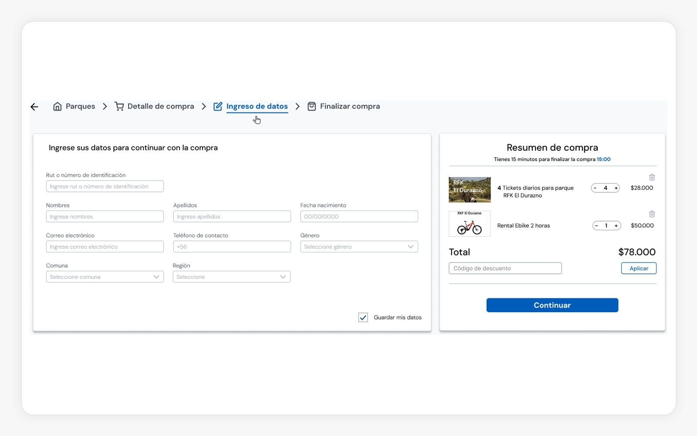
Flujo clave: checkout rediseñado
El nuevo checkout se diseñó para hacer evidente el paso a paso, reducir ambigüedad y dar más control al usuario durante la compra.
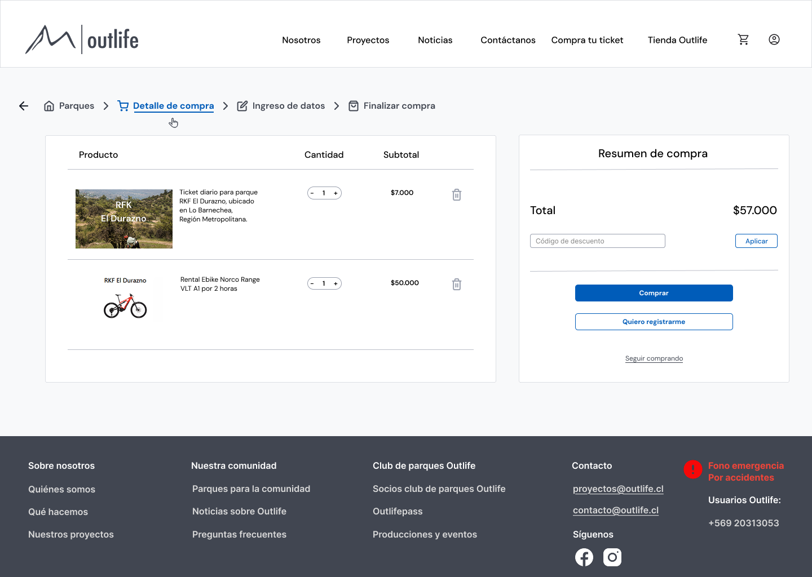
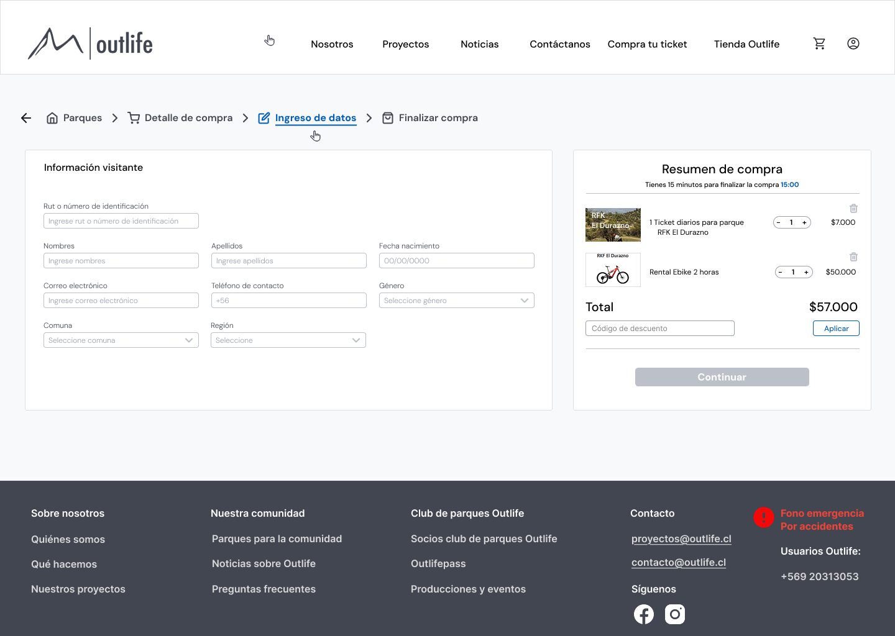
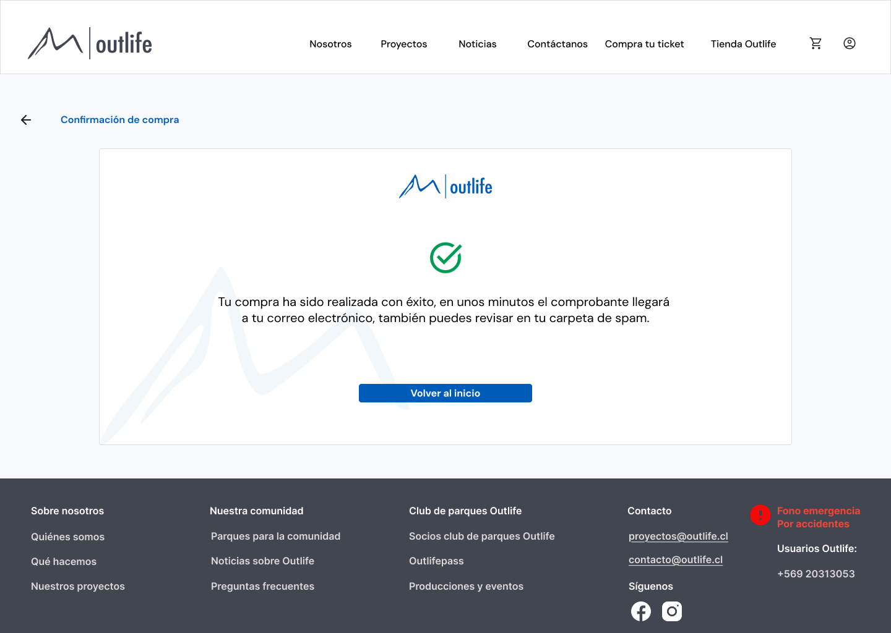
Perfil de usuario: de sección básica a espacio de fidelización
El perfil no debía ser solo una página estática con datos. La oportunidad era transformarlo en un espacio más valioso para el usuario: revisar historial, acceder a tickets, entender su relación con la marca y reforzar una lógica de recurrencia y pertenencia.
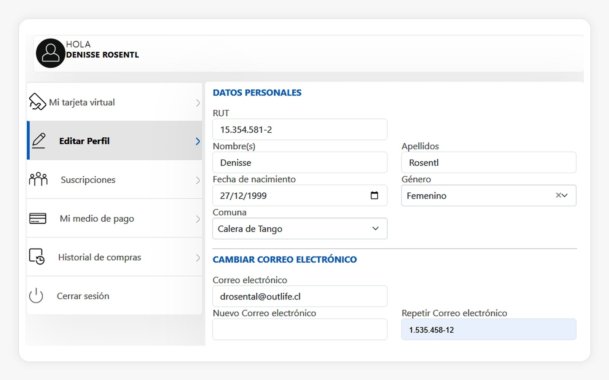
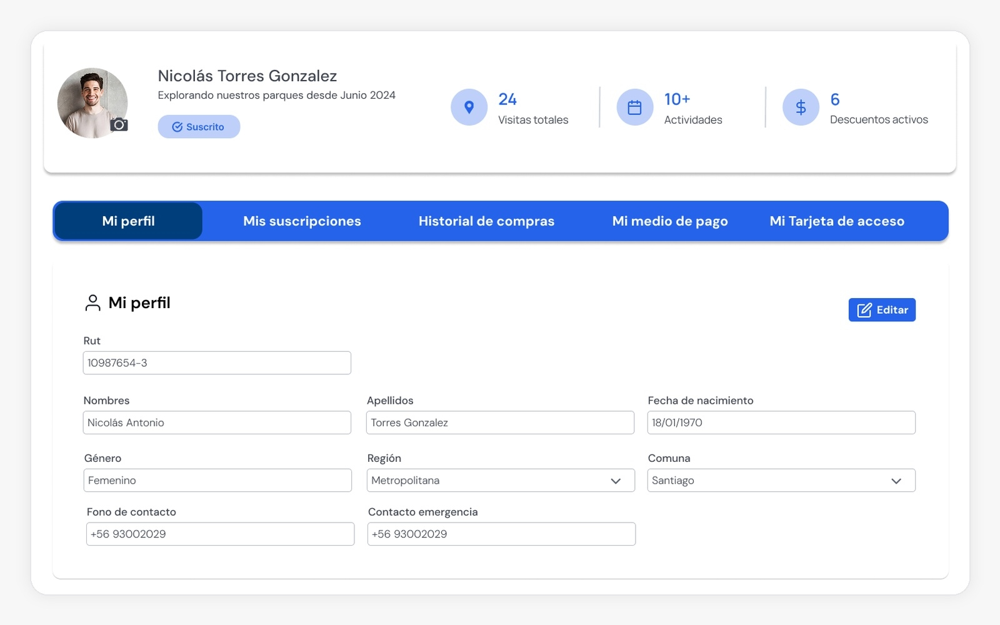
Iteración del perfil: de estructura administrativa a experiencia de engagement
Las primeras exploraciones del perfil resolvían lo funcional, pero todavía se sentían cercanas a una lógica administrativa. En las iteraciones posteriores trabajé la jerarquía de información, la navegación por tabs y la incorporación de señales visuales de uso y fidelización para convertir el perfil en una experiencia más atractiva, clara y alineada con marca.
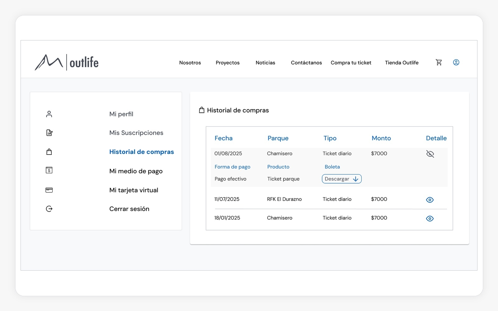
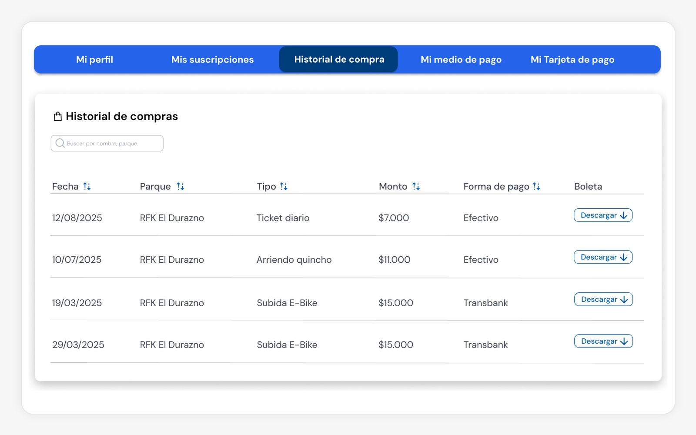
Decisiones clave de diseño
El proyecto se apoyó en un sistema visual ya construido para Outlife, pero adaptado a un contexto distinto: una experiencia pública de e-commerce. Las decisiones clave buscaron reducir fricción, reforzar continuidad visual y aumentar valor percibido tanto en compra como en post-compra.
Jerarquía del flujo
Hice visible el paso a paso de compra con señales más claras de continuidad, progresión y acción principal.
Diseño orientado a usuarios
Definí user personas a partir de datos reales del negocio para aterrizar necesidades de rapidez, claridad, confianza y planificación en una misma experiencia.
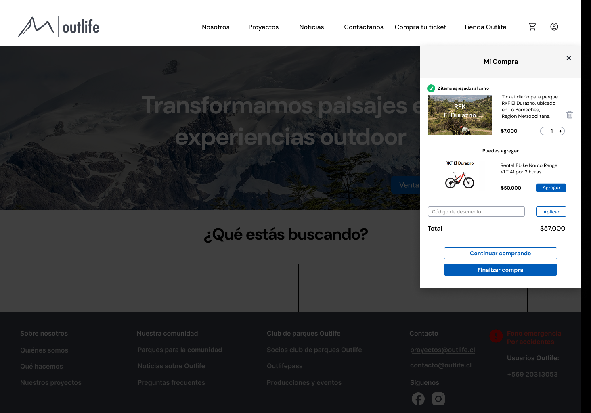
Consistencia de marca
Reutilicé componentes y criterios del sistema visual de Outlife para mantener coherencia entre plataformas, productos y puntos de contacto.
Restricciones del proyecto
Tiempo
El proyecto se desarrolló durante tres meses, en paralelo a otros frentes de diseño dentro del ecosistema Outlife.
Equipo
Yo era la única UX/UI del proyecto y gran parte de la iteración se coordinó de forma remota y asincrónica con el líder de proyecto.
Negocio
Las decisiones debían avanzar con rapidez, equilibrando criterios de marca, expectativas de gerencia y tiempos acotados de implementación.
Resultados
La propuesta fue iterada durante tres meses junto al líder de proyecto, revisada con gerencia e implementada por desarrollo. Además de modernizar visualmente la experiencia, el rediseño mejoró la claridad del flujo de compra, la lectura del resumen y la proyección del perfil como un espacio con más valor para el usuario después de comprar.
Claridad
Se logró un checkout más claro, con mejor jerarquía visual, paso a paso más comprensible y mejor lectura del resumen de compra.
Implementación
La propuesta fue aprobada por gerencia, implementada por desarrollo y acompañada con revisión de inconsistencias y ajustes durante el proceso.
Valor post-compra
El perfil evolucionó desde una vista básica de datos a una experiencia más robusta, con historial, tickets, señales de progreso e incentivos de fidelización.
Más que una mejora visual, el proyecto dejó una experiencia web más actual, alineada con marca y mejor preparada para sostener compra y recurrencia en clientes de Outlife.
Aprendizaje clave
Este proyecto reforzó que en productos orientados a cliente final no basta con actualizar la interfaz: también hay que ordenar el recorrido, clarificar las decisiones principales del flujo y diseñar momentos posteriores a la compra que aporten valor real. Además, consolidó mi capacidad para traducir un sistema visual existente a nuevos puntos de contacto sin perder coherencia de marca ni foco en negocio.